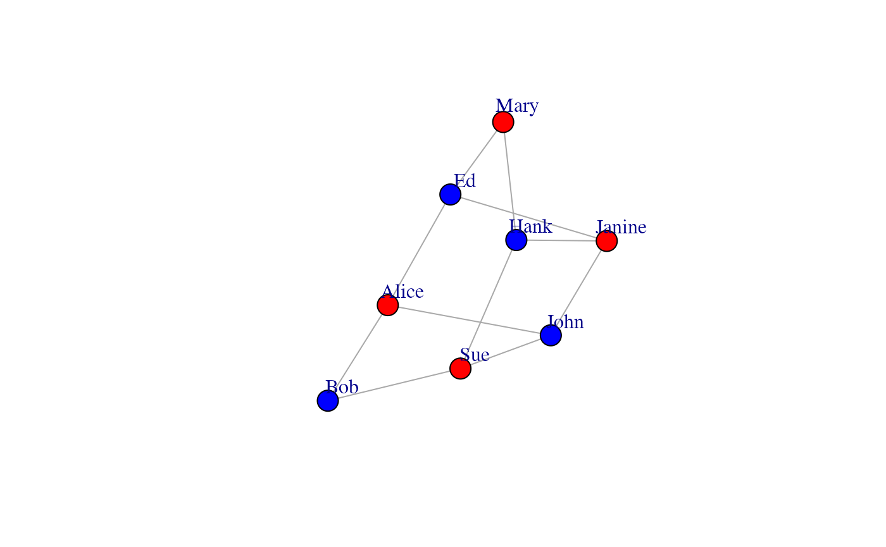

Using CONDOR for community detection in bipartite graphs
John Platig
2015-09-28
Source:vignettes/CONDOR.Rmd
CONDOR.RmdIntroduction
COmplex Network Description Of Regulators (CONDOR) implements methods for clustering bipartite networks and estimating the contribution of each node to its community’s modularity. For an application of this method to identify diesease-associated single nucleotide polymorphisms, see (https://journals.plos.org/ploscompbiol/article?id=10.1371/journal.pcbi.1005033).
Installation
CONDOR can be installed through netZooR as follows:
if(!requireNamespace("BiocManager", quietly = TRUE))
install.packages("BiocManager")
BiocManager::install("netZooR")Implementing the Bipartite Modularity Maximization
The code in condorModularityMax is an implementation of the method described in Michael Barber’s paper Modularity and community detection in bipartite networks (Phys. Rev. E 76, 066102 (2007)). A few general comments:Workflow
library(netZooR)condor works with an edgelist (elist in the code below) as its input.
r = c(1,1,1,2,2,2,3,3,3,4,4);
b = c(1,2,3,1,2,4,2,3,4,3,4);
reds <- c("Alice","Sue","Janine","Mary")
blues <- c("Bob","John","Ed","Hank")
elist <- data.frame(red=reds[r], blue=blues[b])In elist, notice all nodes of the same type–women and men in this case–appear in the same column together. This is a requirement. createCondorObject will throw an error if a node appears in both columns.
condor.object <- createCondorObject(elist)A condor.object is just a list. You can look at the different items using names
names(condor.object)## [1] "G" "edges" "Qcoms" "modularity" "red.memb"
## [6] "blue.memb" "qscores"condorCluster will cluster the nodes and produce the overall modularity along with two community membership data.frames:
condor.object <- condorCluster(condor.object)## [1] "modularity of projected graph 0"
## [1] "Q = 0"
## [1] "Q = 0.198347107438017"
## [1] "Q = 0.231404958677686"
## [1] "Q = 0.231404958677686"
print(condor.object$red.memb)## red.names com
## 1 Alice 1
## 2 Janine 2
## 3 Mary 2
## 4 Sue 1
print(condor.object$blue.memb)## blue.names com
## 1 Bob 1
## 2 Ed 2
## 3 Hank 2
## 4 John 1Nodes in first community are {Alice, John, Bob, Sue}, nodes in second community are {Ed, Janine, Hank, Mary} based on the modularity maximization. Here’s a picture:
gtoy = graph.edgelist(as.matrix(elist),directed=FALSE)
set.graph.attribute(gtoy, "layout", layout.kamada.kawai(gtoy))## IGRAPH 694fdca UN-- 8 11 --
## + attr: layout (g/n), name (v/c)
## + edges from 694fdca (vertex names):
## [1] Alice--Bob Alice--John Alice--Ed Bob --Sue John --Sue
## [6] Sue --Hank John --Janine Ed --Janine Hank --Janine Ed --Mary
## [11] Hank --Mary
plot(gtoy,vertex.label.dist=2)
To get each node’s modularity contribution (as a fraction of the community’s modularity), run
condor.object <- condorQscore(condor.object)If you have a subset of nodes that you think are more likely to lie at the cores of your communities, you can test this using condorCoreEnrich:
q_women <- condor.object$qscores$red.qscore
core_stats <- condorCoreEnrich(test_nodes=c("Alice","Mary"),
q=q_women,perm=TRUE,plot.hist=TRUE)
condor also works on weighted bipartite networks. The package comes with a quantitative pollination network data set (Small 1976) taken from the NCEAS interaction webs data base, containing interactions between 13 plants and 34 pollinators.
data(small1976)
condor.object <- createCondorObject(small1976)
condor.object <- condorCluster(condor.object, project=FALSE)## [1] "modularity of projected graph 0.525346928655047"
## [1] "Q = 0.52666696475026"
## [1] "Q = 0.52666696475026"
condorPlotHeatmap(condor.object)Session Information
## R version 4.1.1 (2021-08-10)
## Platform: x86_64-apple-darwin17.0 (64-bit)
## Running under: macOS Mojave 10.14.6
##
## Matrix products: default
## BLAS: /Library/Frameworks/R.framework/Versions/4.1/Resources/lib/libRblas.0.dylib
## LAPACK: /Library/Frameworks/R.framework/Versions/4.1/Resources/lib/libRlapack.dylib
##
## locale:
## [1] en_US.UTF-8/en_US.UTF-8/en_US.UTF-8/C/en_US.UTF-8/en_US.UTF-8
##
## attached base packages:
## [1] parallel stats graphics grDevices utils datasets methods
## [8] base
##
## other attached packages:
## [1] netZooR_1.0.4 yarn_1.18.0 pandaR_1.19.5
## [4] Biobase_2.52.0 BiocGenerics_0.38.0 reticulate_1.22
## [7] igraph_1.2.6
##
## loaded via a namespace (and not attached):
## [1] utf8_1.2.2 proto_1.0.0
## [3] R.utils_2.11.0 RUnit_0.4.32
## [5] tidyselect_1.1.1 RSQLite_2.2.8
## [7] AnnotationDbi_1.54.1 grid_4.1.1
## [9] BiocParallel_1.26.2 base64url_1.4
## [11] munsell_0.5.0 codetools_0.2-18
## [13] ragg_1.1.3 preprocessCore_1.54.0
## [15] chron_2.3-56 pbdZMQ_0.3-5
## [17] colorspace_2.0-2 Category_2.58.0
## [19] filelock_1.0.2 highr_0.9
## [21] dplR_1.7.2 knitr_1.36
## [23] uuid_0.1-4 stats4_4.1.1
## [25] MatrixGenerics_1.4.3 repr_1.1.3
## [27] GenomeInfoDbData_1.2.6 bit64_4.0.5
## [29] rhdf5_2.36.0 rprojroot_2.0.2
## [31] downloader_0.4 vctrs_0.3.8
## [33] generics_0.1.0 xfun_0.26
## [35] BiocFileCache_2.0.0 R6_2.5.1
## [37] doParallel_1.0.16 GenomeInfoDb_1.28.4
## [39] illuminaio_0.34.0 RJSONIO_1.3-1.6
## [41] locfit_1.5-9.4 bitops_1.0-7
## [43] rhdf5filters_1.4.0 cachem_1.0.6
## [45] reshape_0.8.8 DelayedArray_0.18.0
## [47] assertthat_0.2.1 BiocIO_1.2.0
## [49] scales_1.1.1 nnet_7.3-16
## [51] gtable_0.3.0 rlang_0.4.11
## [53] genefilter_1.74.0 systemfonts_1.0.2
## [55] splines_4.1.1 rtracklayer_1.52.1
## [57] GEOquery_2.60.0 hexbin_1.28.2
## [59] reshape2_1.4.4 yaml_2.2.1
## [61] backports_1.2.1 GenomicFeatures_1.44.2
## [63] RBGL_1.68.0 tools_4.1.1
## [65] nor1mix_1.3-0 ggplot2_3.3.5
## [67] ellipsis_0.3.2 gplots_3.1.1
## [69] jquerylib_0.1.4 RColorBrewer_1.1-2
## [71] ggdendro_0.1.22 siggenes_1.66.0
## [73] STRINGdb_2.4.1 gsubfn_0.7
## [75] hash_2.2.6.1 Rcpp_1.0.7
## [77] plyr_1.8.6 base64enc_0.1-3
## [79] sparseMatrixStats_1.4.2 progress_1.2.2
## [81] zlibbioc_1.38.0 purrr_0.3.4
## [83] RCurl_1.98-1.5 prettyunits_1.1.1
## [85] sqldf_0.4-11 openssl_1.4.5
## [87] bumphunter_1.34.0 S4Vectors_0.30.2
## [89] cluster_2.1.2 SummarizedExperiment_1.22.0
## [91] fs_1.5.0 magrittr_2.0.1
## [93] data.table_1.14.2 matrixStats_0.61.0
## [95] hms_1.1.1 evaluate_0.14
## [97] xtable_1.8-4 XML_3.99-0.8
## [99] mclust_5.4.7 IRanges_2.26.0
## [101] compiler_4.1.1 biomaRt_2.48.3
## [103] minfi_1.38.0 tibble_3.1.5
## [105] RCy3_2.12.4 KernSmooth_2.23-20
## [107] crayon_1.4.1 R.oo_1.24.0
## [109] htmltools_0.5.2 GOstats_2.58.0
## [111] mgcv_1.8-36 tzdb_0.1.2
## [113] tidyr_1.1.4 DBI_1.1.1
## [115] dbplyr_2.1.1 MASS_7.3-54
## [117] rappdirs_0.3.3 Matrix_1.3-4
## [119] readr_2.0.2 permute_0.9-5
## [121] quantro_1.26.0 uchardet_1.1.0
## [123] R.methodsS3_1.8.1 quadprog_1.5-8
## [125] GenomicRanges_1.44.0 pkgconfig_2.0.3
## [127] pkgdown_1.6.1 GenomicAlignments_1.28.0
## [129] signal_0.7-7 IRdisplay_1.0
## [131] xml2_1.3.2 foreach_1.5.1
## [133] annotate_1.70.0 penalized_0.9-51
## [135] bslib_0.3.1 rngtools_1.5
## [137] multtest_2.48.0 beanplot_1.2
## [139] XVector_0.32.0 AnnotationForge_1.34.0
## [141] doRNG_1.8.2 scrime_1.3.5
## [143] stringr_1.4.0 digest_0.6.28
## [145] vegan_2.5-7 graph_1.70.0
## [147] Biostrings_2.60.2 rmarkdown_2.11
## [149] base64_2.0 edgeR_3.34.1
## [151] DelayedMatrixStats_1.14.3 GSEABase_1.54.0
## [153] restfulr_0.0.13 curl_4.3.2
## [155] Rsamtools_2.8.0 gtools_3.9.2
## [157] rjson_0.2.20 lifecycle_1.0.1
## [159] nlme_3.1-152 jsonlite_1.7.2
## [161] Rhdf5lib_1.14.2 viridisLite_0.4.0
## [163] desc_1.4.0 askpass_1.1
## [165] limma_3.48.3 fansi_0.5.0
## [167] pillar_1.6.3 lattice_0.20-44
## [169] plotrix_3.8-2 KEGGREST_1.32.0
## [171] fastmap_1.1.0 httr_1.4.2
## [173] survival_3.2-11 GO.db_3.13.0
## [175] glue_1.4.2 png_0.1-7
## [177] iterators_1.0.13 bit_4.0.4
## [179] Rgraphviz_2.36.0 stringi_1.7.5
## [181] sass_0.4.0 HDF5Array_1.20.0
## [183] blob_1.2.2 textshaping_0.3.5
## [185] org.Hs.eg.db_3.13.0 caTools_1.18.2
## [187] memoise_2.0.0 IRkernel_1.2
## [189] dplyr_1.0.7